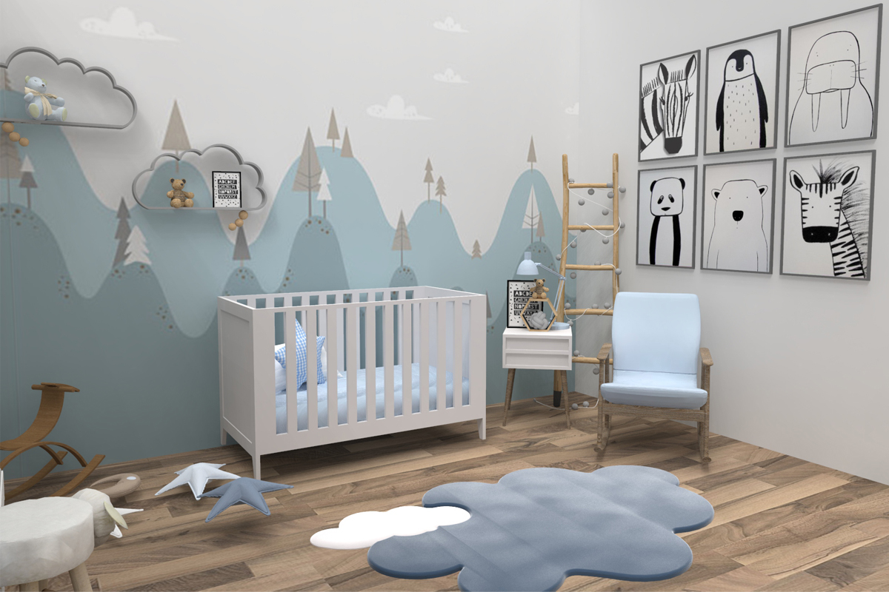
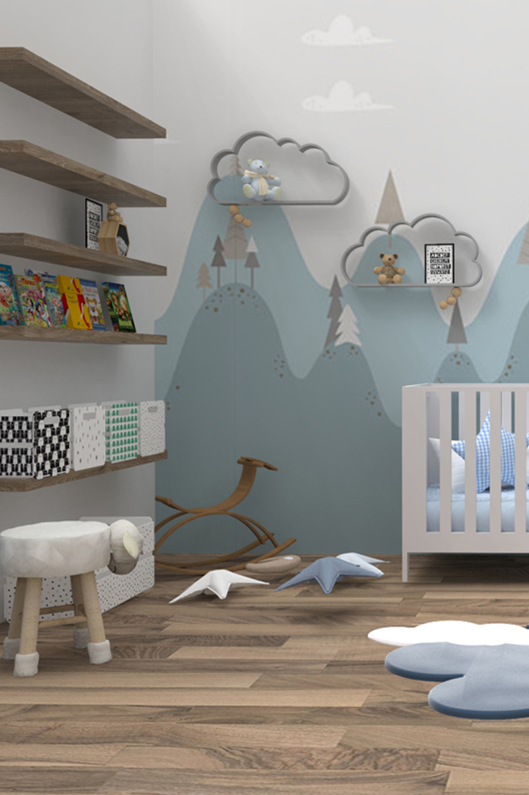
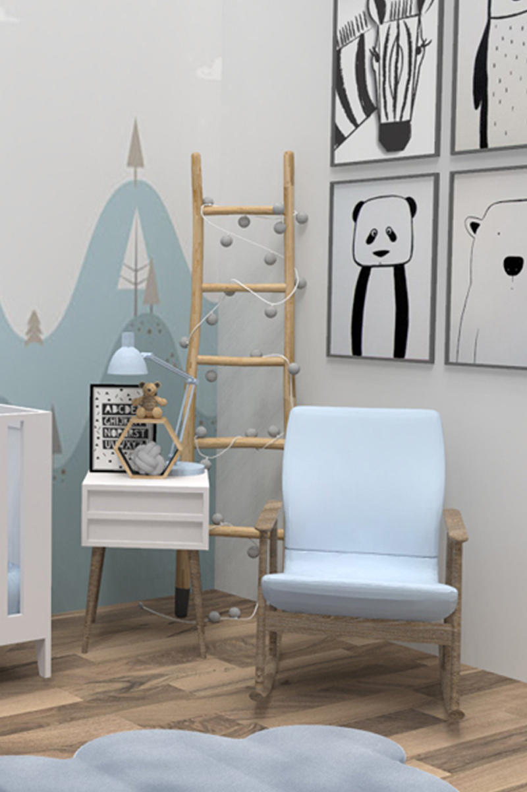
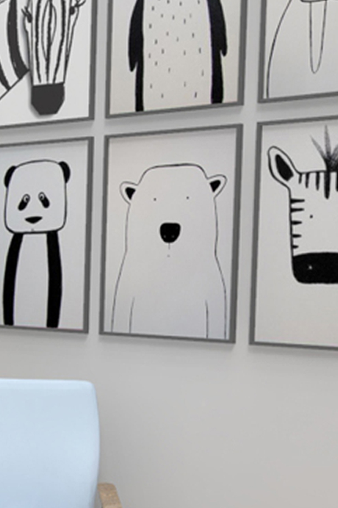
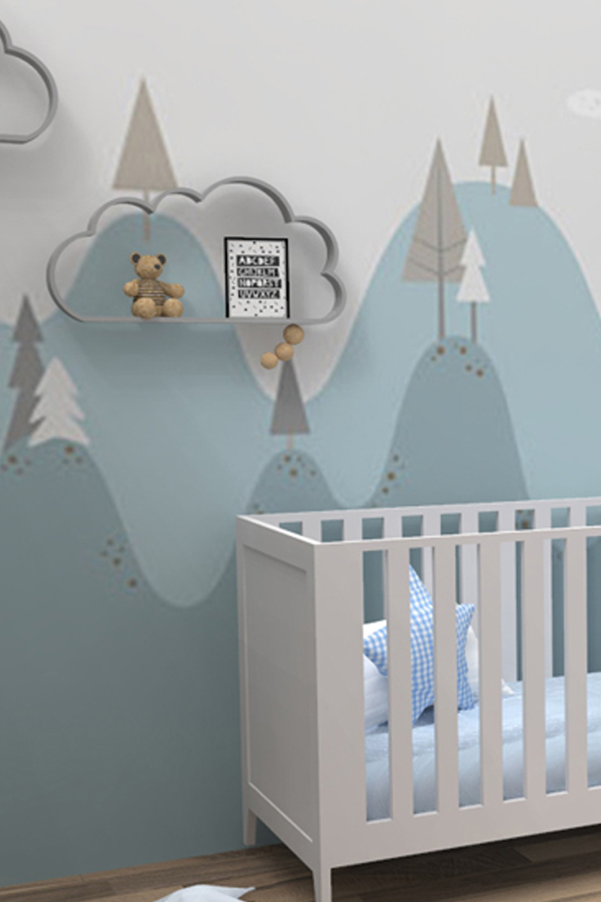

Boy Nursery
Bright, bold and full of period features.
— Maria Houssami

This family home in south london was in beautiful condition when we were asked to come onboard to design the interiors. It has stunning original features – that fireplace – and what it needed to make it feel like a home was some colour and life.
Vintage pieces, contemporary design classics and some new classics of the future combine to make this home a quiet showstopper. The simple framework we created, of rich earthy pink and warm pale blues, gives the perfect backdrop for some bold colour moments. Organic shapes soften the spaces, bespoke joinery adds luxury and a recycled plastic coffee table gives a touch of sustainable joy.



